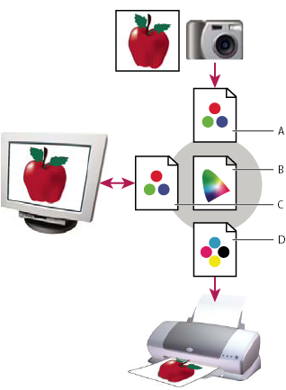

About color profiles
Precise, consistent color management requires accurate ICC-compliant profiles of all of your color devices. For example, without an accurate scanner profile, a perfectly scanned image may appear incorrect in another program, simply due to any difference between the scanner and the program displaying the image. This misleading representation may cause you to make unnecessary, time-wasting, and potentially damaging “corrections” to an already satisfactory image. With an accurate profile, a program importing the image can correct for any device differences and display a scan’s actual colors.
A color management system uses the following kinds of profiles:
- Monitor profiles
- Describe how the monitor is currently reproducing color. This is the first profile you should create because viewing color accurately on your monitor allows for critical color decisions in the design process. If what you see on your monitor is not representative of the actual colors in your document, you will not be able to maintain color consistency.
- Input device profiles
- Describe what colors an input device is capable of capturing or scanning. If your digital camera offers a choice of profiles, Adobe recommends that you select Adobe RGB. Otherwise, use sRGB (which is the default for most cameras). Advanced users may also consider using different profiles for different light sources. For scanner profiles, some photographers create separate profiles for each type or brand of film scanned on a scanner.
- Output device profiles
-
Describe
the color space of output devices like desktop printers or a printing
press. The color management system uses output device profiles to
properly map the colors in a document to the colors within the gamut of
an output device’s color space. The output profile should also take
into consideration specific printing conditions, such as the type
of paper and ink. For example, glossy paper is capable of displaying
a different range of colors than matte paper.
Most printer drivers come with built‑in color profiles. It’s a good idea to try these profiles before you invest in custom profiles.
- Document profiles
-
Define the specific
RGB or CMYK color space of a document. By assigning, or tagging,
a document with a profile, the application provides a definition
of actual color appearances in the document. For example, R=127, G=12,
B=107 is just a set of numbers that different devices will display
differently. But when tagged with the AdobeRGB color space, these
numbers specify an actual color or wavelength of light; in this
case, a specific color of purple.
When color management is on, Adobe applications automatically assign new documents a profile based on Working Space options in the Color Settings dialog box. Documents without assigned profiles are known as untagged and contain only raw color numbers. When working with untagged documents, Adobe applications use the current working space profile to display and edit colors.

- A.
- Profiles describe the color spaces of the input device and the document.
- B.
- Using the profiles’ descriptions, the color management system identifies the document’s actual colors.
- C.
- The monitor’s profile tells the color management system how to translate the document’s numeric values to the monitor’s color space.
- D.
- Using the output device’s profile, the color management system translates the document’s numeric values to the color values of the output device so the correct appearance of colors is printed.